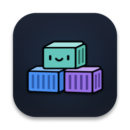

I Love Containers (ILC)
Desktop App · Multi-Engine Container ClientFast and lightweight desktop client for macOS, Windows, and Linux that simplifies container management with support for Docker Desktop, OrbStack, Colima, Rancher, and Podman.